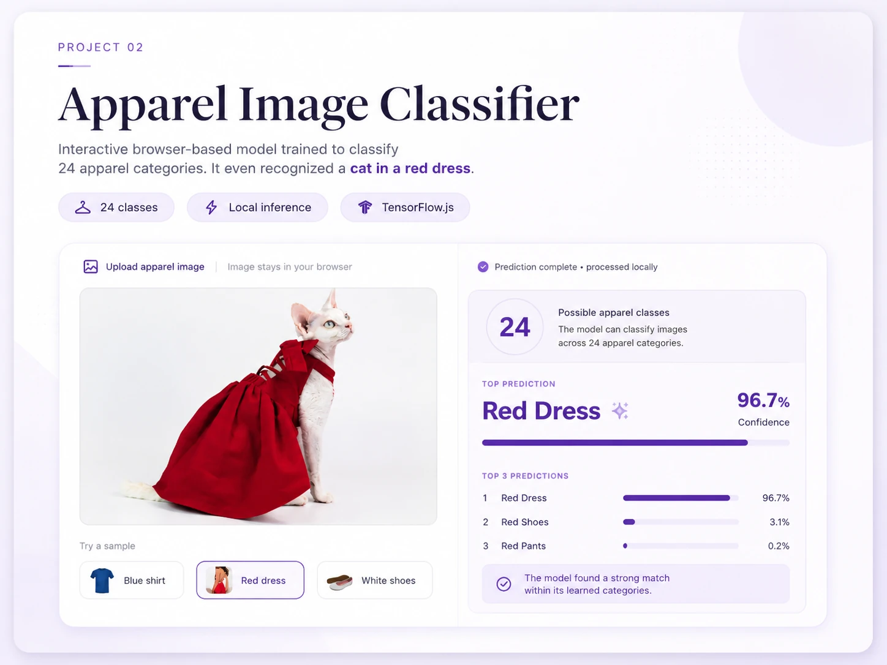
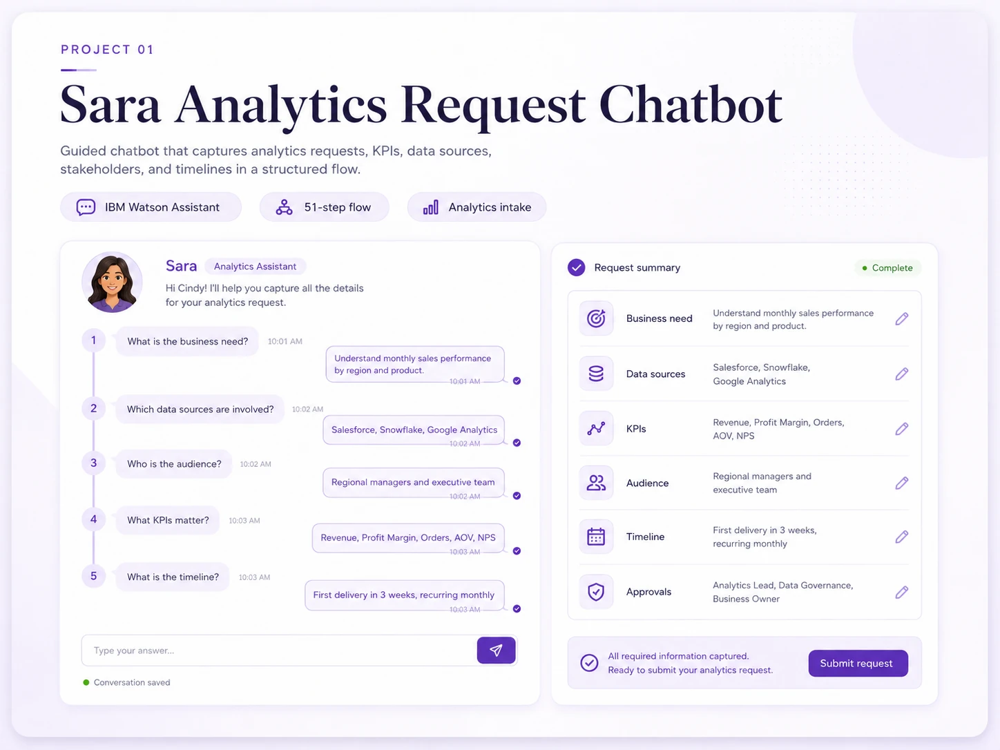

Analytics Manager · Data, AI & Analytics Products
If it challenges me, it is probably worth doing.
I am Cindy Mendoza. I build analytics solutions that connect data, technology, business needs, and the people who actually use them. I enjoy projects that require me to learn, question the obvious, and turn complexity into something useful.
Data is technical. Making it useful is human.
My work sits between analytics, product thinking, business strategy, and user experience.
Hi, I’m Cindy! Welcome to my portfolio.
I have worked on business intelligence, customer analytics, reporting automation, data products, and AI projects. I am curious by nature and love experimenting with technologies to learn what they can really do in practice. I am especially interested in building solutions that are not only technically sound, but also understandable, maintainable, and useful in real decisions. Check my portfolio to see some of my latest experiments.
Experience across teams and regions
Supported analytics programs used across global business teams.
Led analytics initiatives across AMER, EMEA, and APAC.
Projects
Interactive work where analytics, artificial intelligence, and practical problem solving come together.

Computer Vision
Apparel Image Classifier
Trained and optimized a model to classify 24 apparel categories, then deployed it for local browser predictions. It even identified a cat wearing a red dress with 96.7% confidence.

Task Optimization
Sara Analytics Request Chatbot
Designed a guided chatbot that turns an informal analytics request into a structured intake by capturing business needs, data sources, KPIs, audience, timeline, and approvals.
What I work with
Analytics Leadership
Data Strategy
Business Intelligence
Analytics Products
Customer Analytics
Applied AI
SQL
Python
Databricks
Power BI
Adobe Analytics
Salesforce